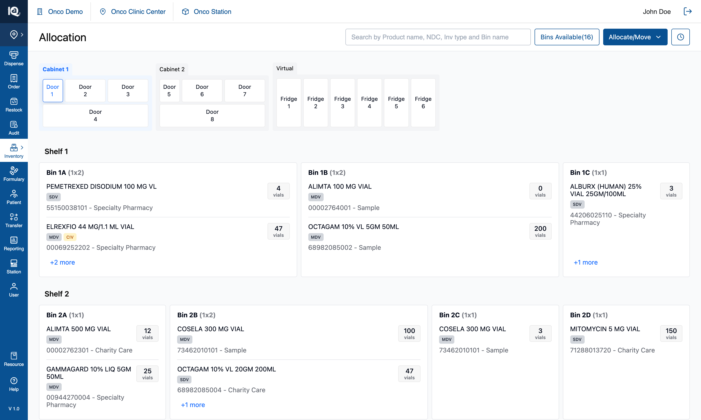
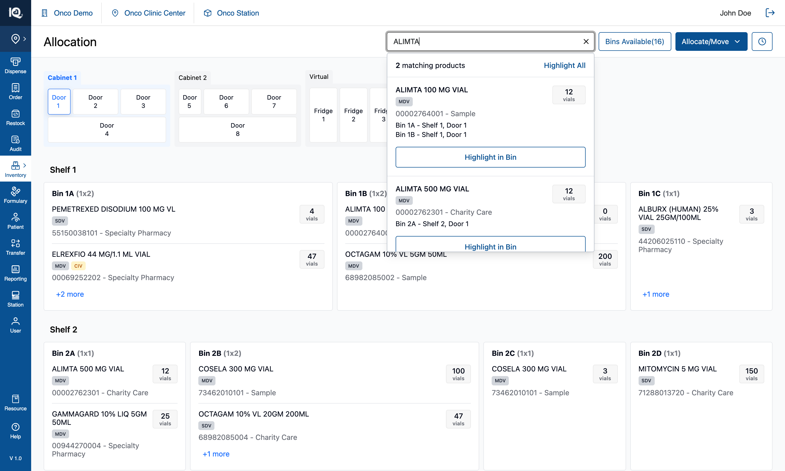
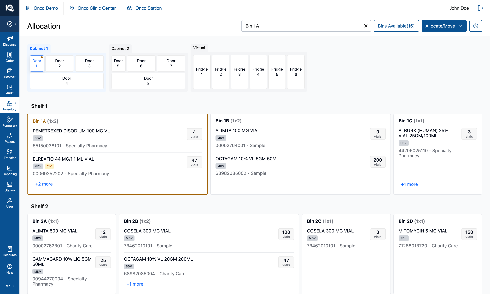
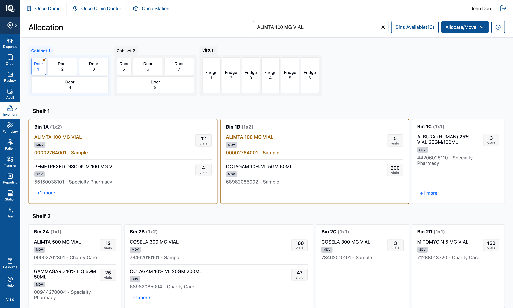
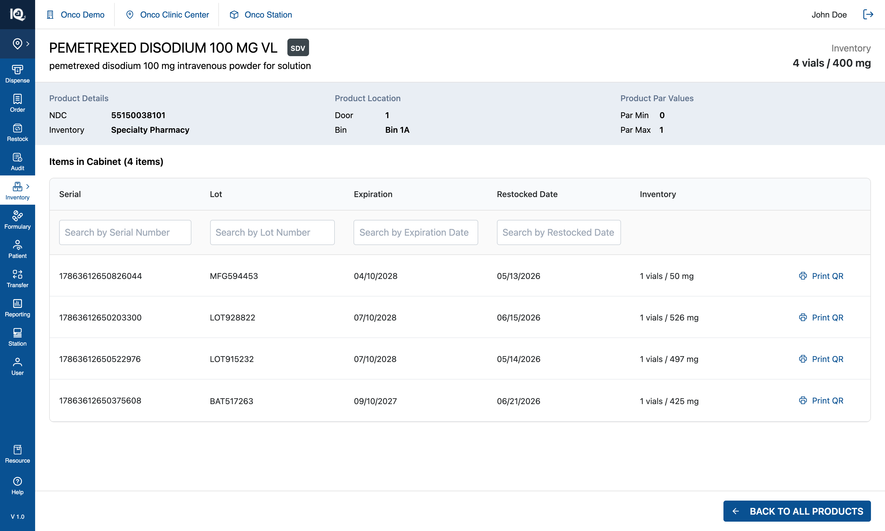
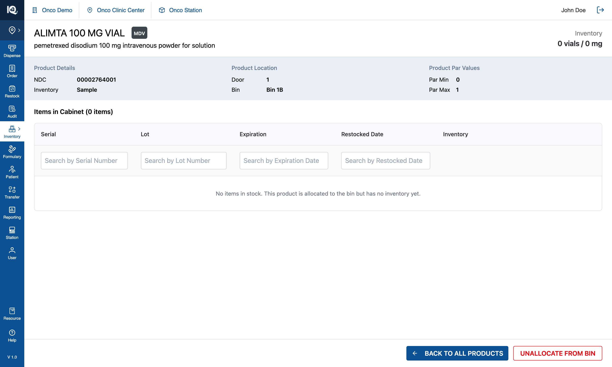
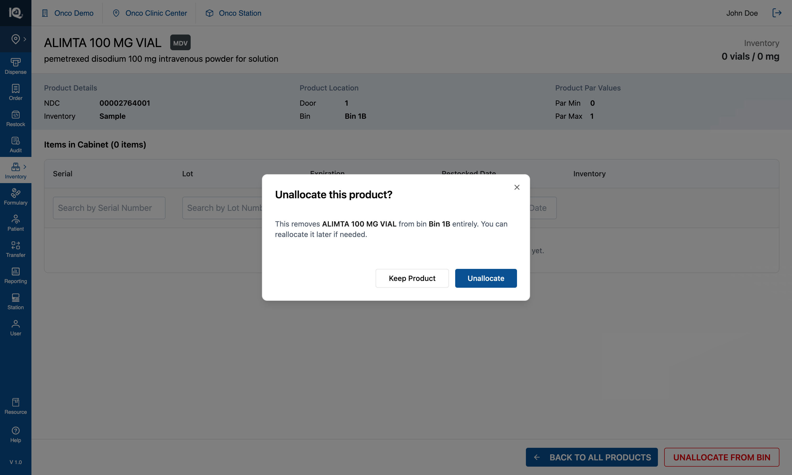

00 — Introduction
# 00 — Introduction
**Module:** Bin Allocation 2.0 — the Allocation page under Inventory
**Prototype:** React 18 + Vite + TypeScript + Tailwind 4, no backend
**Captured:** 2026-08-10 · seed data unmodified · screenshots at 1512×908
Read this before the feature documents. It covers the model the whole module rests on — cabinets,
doors, bins and product rows — how the operator moves around it, what search does, and which parts of
the screen are real behaviour versus placeholder. Each feature document then assumes this context.
---
## Default state {copy}

The Allocation page opens on **Cabinet 1, Door 1**, with that door's four shelves listed below the
cabinet strip and every bin on them drawn as a card. The cabinet strip is the module's map: three
cabinets side by side — Cabinet 1 (Doors 1–4), Cabinet 2 (Doors 5–8) and Virtual (Fridge 1–6) — and the
open door is outlined in blue. Each bin card shows its name and footprint, then a row per product it
holds, each row carrying the drug name, its badges, `NDC - inventory type` and a quantity chip.
From here the operator can tap any door to open it, tap a cabinet's header to move the highlight to
that cabinet, tap `+N more` on a bin card to read the products a card had no room for, tap a product
row to open its detail page, search from the header, press `Bins Available(n)` to mark the empty bins,
open `Allocate/Move` to start one of the four workflows, or open History. Browsing is non-destructive:
nothing on this screen changes inventory, and the four workflows are the only way to do that.
## Search in View Mode {copy}

Typing three or more characters in the header search opens a dropdown of matches, in two sections —
**matching bins** first (by bin name), then **matching products** (name, NDC, source, inventory type or
generic name). Each product row states where that drug actually lives, one line per bin, which is
usually the answer the operator came for: `Bin 1A - Shelf 1, Door 1`.
From here the operator can press `Highlight in Bin` on a product to light up every bin holding it,
`Highlight Bin` on a bin row to light that one bin, or `Highlight All` in either section header to
light every match at once. In View Mode nothing in this dropdown selects or changes anything; it only
points. Typing alone does not mark the canvas either — the operator has to choose a row, which is what
separates "what I am looking for" from "what I found". The two outcomes look different, and the
difference is the point: one marks a **place**, the other marks a **drug wherever it is**.
**A bin highlighted** — `Highlight Bin` on the row for Door 1's Bin 1A:

The bin's card takes an amber outline and **its name turns amber**, the door holding it carries an
amber dot in the cabinet strip, and the search box fills in the bin's real label. The products inside
are untouched — the operator asked for a place, so the place is what is marked. If the bin sits behind
a closed door, choosing the row opens that door and scrolls the card into view.
**A product highlighted** — `Highlight in Bin` on ALIMTA 100 MG VIAL:

Every bin holding that exact product is outlined, and inside each one the matching row's **name and
`NDC - inventory type` turn amber** while the bin's own name stays black. Bin 1A and Bin 1B are both
marked because the drug lives in both — matching is on the identity triple, so `ALIMTA 100 MG VIAL`
with this NDC and inventory type is marked and the 500 MG variant on Shelf 2 is not.
One behaviour here is easy to miss and must be preserved: **a matching row is floated to the top of its
card, and the card's visible window grows to fit it.** Bin 1A shows only two of its four products by
default, and ALIMTA was one of the two behind `+2 more` — without the float, the bin would light up
while the thing the operator searched for stayed hidden.
## Product details {copy}

Tapping a product row anywhere in View Mode — on a bin card or in the `+N more` panel — replaces the
page with that product's detail view: name, generic name and badges, its total on hand, the NDC and
inventory type, the door and bin it was opened from, and a table of the individual items in that bin
with serial, lot, expiry and restock date.
From here the operator can search the item table by serial, lot, expiry or restock date, and return with
**Back to all products**, which comes back to the cabinet exactly as they left it. Each item row also
offers `Print QR`, which is **not wired up** in the prototype — the button renders and does nothing.
### Zero inventory — a product allocated but not stocked

A product can hold a bin while holding no stock, and this is a **normal state, not an error**. It
arises two ways, both of them ordinary:
- **Multi Bin Assignment opens a new location at `quantity: 0` by design** — the allocation is the act;
stock arrives later by moving it in.
- **A move empties the source** — every unit was taken out, and the allocation stayed behind.
The page changes in three ways and no others:
| | At 0 quantity |
|---|---|
| Header total | `0 vials / 0 mg` |
| Items table | `Items in Cabinet (0 items)`, with one row of copy in place of bare column headers: *"No items in stock. This product is allocated to the bin but has no inventory yet."* |
| Footer | A second, red-outlined action appears beside Back: **`UNALLOCATE FROM BIN`** |
Everything else still reads normally — the drug's identity, its badges, and the door and bin it occupies
— because the allocation is real. The bin also still counts as **occupied**: it is not "available" and
not included in `Bins Available(n)`, which is the distinction that whole feature turns on
([01-Bins-Available.md](01-Bins-Available.md) §3.2). A developer implementing that count from "bins with
zero stock" would produce a different, wrong number.
### The Unallocate action

`UNALLOCATE FROM BIN` releases the bin: the product's row is removed, and the bin becomes available if
that was the last row in it. It is **the only inventory change reachable from this page**, and the only
way to undo an allocation anywhere in the module.
The flow, and the rules that hold it together:
1. **The action only exists at 0 quantity.** It is conditional on the quantity being exactly 0 — a
product with stock cannot be unallocated, because that would strand physical units in a bin the
system no longer believes in. Emptying it first is a move, not this.
2. **It always confirms.** The dialog names the product and the bin — *"This removes ALIMTA 100 MG VIAL
from bin Bin 1B entirely. You can reallocate it later if needed."* — and offers `KEEP PRODUCT`
(outlined) against `UNALLOCATE` (the app's blue primary). Note the trigger is red and the
confirmation's commit is not: red marks the entrance to a destructive act, and by the dialog the
operator has already been warned.
3. **The escape hatch is stated, not implied.** "You can reallocate it later" is doing real work: it
tells the operator this is reversible by reallocating, which is why the confirmation can be a single
step rather than a typed confirmation.
4. **On confirm:** the row is removed from the bin, the bin's `available` flag is recomputed, a
`Unallocated` entry is written to History with the bin it came from, a success toast is raised, and
the page returns to the cabinet — the operator does not sit on a detail page for a product that no
longer has a location.
5. **The same act exists on one other surface.** After a move empties a bin, the zero-inventory banner
above the cabinet offers unallocation for the products it emptied. Same outcome, same confirmation
pattern; that one is prompted, this one is sought out.
Three edge cases worth deciding deliberately rather than inheriting:
- **The product does not return to an unallocated tray.** The tray is seeded once, from catalogue
products that hold no bin, and unallocating does not add to it. So the product becomes reachable only
by searching the catalogue in Multi Bin Assignment. Whether unallocating should return it to the tray
is an open product question, not a settled behaviour.
- **A product in several bins is unallocated from one bin only.** The action is scoped to the bin the
page was opened from — which is right, but means "unallocate this product" reads more broadly than it
acts, and a product at 0 in three bins needs the flow three times.
- **The return to the cabinet is on a timer.** The prototype waits 100ms after the state update before
navigating back. It works, and it is the kind of thing that should be driven by state rather than a
delay in a real build. One conditional control: when the product's quantity is **0**, an `Unallocate` action
appears, which releases the bin — the only inventory change reachable from this page, and the same act
the zero-inventory banner offers after a move empties a bin. A product row is only a link **outside** a
workflow; inside one, the same row either selects that product or does nothing (§2).
---
## 1. The cabinet model
### 1.1 Hierarchy
```
Cabinet ──> Door ──> Shelf ──> Bin ──> Product row
```
| Level | In the seed | Notes |
|---|---|---|
| Cabinet | 3 — Cabinet 1, Cabinet 2, Virtual | Virtual is the fridges |
| Door | 14 — Doors 1–8 in the two cabinets, Doors 9–14 as Fridge 1–6 | Fridges are labelled `Fridge N` (door number − 8) |
| Shelf | 4 per cabinet door; none for a fridge | A fridge holds one pooled bin and no shelf structure |
| Bin | **134** — 128 across the cabinet doors, 6 pooled fridge bins | 16 are empty in the seed |
| Product row | **385** across those bins | The same drug in two bins is two rows |
### 1.2 Per-door configuration
| Door | Shelves | Bins | Empty | Footprints |
|---|---|---|---|---|
| Door 1 | 4 | 15 | 1 | 10 × 1x1, 5 × 1x2 |
| Door 2 | 4 | 15 | 2 | 4 × 1x1, 4 × 1x2, 7 × 2x2 |
| Door 3 | 4 | 15 | 2 | 2 × 1x1, 7 × 1x2, 6 × 2x2 |
| Door 4 | 4 | 16 | 2 | 4 × 2x2, 8 × 2x3, 4 × 3x3 |
| Door 5 | 4 | 18 | 3 | 16 × 1x1, 2 × 1x2 |
| Door 6 | 4 | 15 | 2 | 4 × 1x1, 4 × 1x2, 7 × 2x2 |
| Door 7 | 4 | 18 | 2 | 4 × 1x1, 10 × 1x2, 4 × 2x2 |
| Door 8 | 4 | 16 | 2 | 4 × 2x2, 8 × 2x3, 4 × 3x3 |
| Fridge 1–6 | — | 1 each | 0 | one pooled bin |
Three door **types** drive that geometry, and each shelf of a door is laid out to the same grid:
| Type | Doors | Grid per shelf |
|---|---|---|
| single | 1, 5 | 1 row × 5 columns |
| double | 2, 3, 6, 7 | 2 rows × 5 columns |
| bottom ("unique") | 4, 8 | 5 rows × 5 columns — the wide door at the base of the cabinet |
A footprint is named `rows x cols`, so a `1x2` spans two columns of one row and a `2x3` is three
columns across two rows. Rotations keep the name, which is why the renderer measures `gridPosition`
(width = columns, height = rows) rather than the size label.
### 1.3 Bin naming
`Bin 1A`, `Bin 1B` on shelf 1; `Bin 2A` on shelf 2 — **the bin name carries its shelf**, generated at
seed time rather than imported. Uniqueness is scoped to the **door**, which is the unit that has to be
unambiguous because all of a door's shelves are on screen together. Across doors the label repeats:
`Bin 1A` names eight different bins in this seed, which is why anything listing bins outside one door
qualifies them as `Door 3 - Bin 1A`.
Fridge bins keep their imported name and their card omits the bin header entirely — one pooled bin has
nothing to be told apart from.
### 1.4 Product identity
A product is identified by **name + NDC + inventory type**, never by `product.id`: the same drug in
three bins is three rows with three different ids. Everything user-facing — search grouping, counters,
badges, de-duplication — keys on that triple. The four inventory types in the seed are Purchased,
Sample, Charity Care and Specialty Pharmacy, and the badges (`SDV`/`MDV`, `CLIMATE`, `CIV`) are derived
from a hash of the identity triple so a drug looks the same everywhere it appears.
---
## 2. Interaction model
Everything on the canvas is a tap target whose meaning depends on the mode. In View Mode:
| Tap | Result |
|---|---|
| A cabinet header | Selects that cabinet (highlight only — no door opens) |
| A door | Opens it: its shelves and bins replace the ones below, and its cabinet becomes selected |
| A bin card | Selects the bin — a blue outline, nothing more (see §5) |
| A product row | Opens that product's detail page |
| `+N more` | Opens a side panel listing every product in that bin |
| A door dot | Not a control — an indicator that this door holds a search match or an empty bin |
Inside a workflow the same taps mean different things, which is the single most important thing to
carry into the feature documents:
| Tap | Allocate Product / Multi Bin Assignment | Move from Bin, step ① | Move from Product, step ① | Either move, step ② |
|---|---|---|---|---|
| Bin card | Picks the bin to allocate into | Picks it as **Move From** | Refused, with a toast explaining why | Picks it as **Move To** |
| Product row | Inert — the tap has to mean the bin | Inert | Selects that product in that bin | Inert |
Two rules behind that table:
- **The operator declares the unit up front.** A move is started as either *Move from Bin* or *Move from
Product*, and that choice — not the shape of the data — decides whether a bin tap or a product tap is
the meaningful one. Nothing is inferred.
- **A refused tap explains itself.** Tapping a bin during a Product move, or a product in the `+N more`
panel during a move, raises a toast naming the control that would have worked. A rule enforced in
silence is indistinguishable from a broken control.
---
## 3. Navigation patterns
There is **no router**. The module is one page whose content is switched by boolean state, and it is
worth knowing that up front because it shapes what "back" means:
| Surface | How it opens | How it leaves |
|---|---|---|
| Cabinet browse | The default | — |
| Product detail | Tapping a product row | `Back to all products` |
| History | The clock button in the header | `Back` |
| Move pipeline (4 steps) | `Allocate/Move` › a Move entry | `Cancel`, which discards the move |
| Side panels — allocation, `+N more`, move summary | Their own trigger | Their `X` or `Cancel` |
Three patterns hold across all of them:
- **Full pages for full tasks, panels for context.** Anything that changes inventory takes over the
page — the move pipeline's four steps and the review screen are pages, not dialogs. Panels (440px on
the right for allocation, 320px for the move summary) are for choosing and checking while the canvas
stays visible behind them.
- **Layering is fixed:** side panels at `z-70`, overlays those panels own at `z-80`, toasts at `z-100`
top-right, so a message raised while a panel is open is never hidden behind it.
- **Leaving a flow discards it.** There is no draft state and nothing is saved part-way, which is why
`Cancel` and `Back` are ordinary blue secondary buttons rather than destructive red, and why the
header's workflow entry points hide while a flow is open.
---
## 4. How search works
Three query channels exist and are deliberately independent. Conflating them has been the source of
most historical bugs here:
| Channel | Means |
|---|---|
| Typed query | What is in the box right now |
| Highlight query | What the canvas is marking — set only by choosing a dropdown row |
| Source query | Which products a workflow's selection is scoped to |
**Nothing on the canvas reads the typed text.** The bin outlines, the door dots and the match count all
read the highlight channel, so typing narrows the dropdown and marks nothing until a row is chosen.
The query grammar: terms are separated by whitespace **or** commas, interchangeably, and every term
must appear in *some* searchable field, not the same one — which is what makes `carbo purchased` work
(the name answers one term, the inventory type the other). Minimum query length is **3 characters**, so
a two-character bin name like `1A` finds nothing.
Bin hits match on **bin name only**, deliberately: a bin holding a matched product would otherwise
appear in both sections as two answers to one question. Products are the product section's job.
The highlight colour is `#A16207` throughout — the card outline, the bin name when the match is on the
name, the product row's text when the match is on the product, and the door dot. Two mechanics behind
the screenshots above:
- **A bin is highlighted by id, never by query.** `Bin 1A` names eight bins in this seed, so putting the
name into a query channel lit all eight. `Highlight Bin` sends one id; `Highlight All` sends every
match's ids and the typed query, which is only used to decide which part of each label to tint.
- **Matching product rows float to the top of their card** and the card's visible window grows to fit
them, so a match hidden behind `+N more` is never pointed at and then concealed.
---
## 5. What the module does not model
Four of these look like they exist. They do not, and building against them as if they do is the most
likely way to misread the prototype:
| Concept | Reality |
|---|---|
| **Par levels / min-max** | Not modelled. The product detail page prints `Par Min 0` / `Par Max 1` — those two numbers are **hardcoded in the markup**, not read from any product. |
| **Bin capacity / "bin is full"** | No runtime concept of fullness, so no capacity conflict can be raised. The only capacity is a seed-time layout calculation. |
| **Product fits bin** | Inverted: a bin's footprint is *derived from how much it holds* at seed time. Products have no footprint. |
| **Door-type routing** | Nothing stops a climate-sensitive product being allocated to a room-temperature door. The seed keeps cold stock in the fridges, but that is data, not enforcement. |
| **Serial number validation** | Serials are *counted*, never checked against anything. |
Taken together: **within the scope of this phase there are no domain constraints on what may go where.**
Any product can be allocated to any bin in either cabinet or any fridge, and the module will accept it
without objection. Validation of that kind is outstanding work, not a rule waiting to be found in the
code — so a real build has to decide which constraints exist before it can enforce any.
Two more pieces of the detail page are placeholder and must not be implemented as behaviour: the item
table's serial, lot, expiry and restock values are **generated at render time** (one row per unit of
quantity, with a random mg figure), and the header's total reads `quantity × 100 mg` regardless of the
drug's real strength.
**The left navigation rail is mostly inert, but not entirely** — and the exception is the kind of thing
that looks like a bug when you find it by clicking:
| Rail item | What it does |
|---|---|
| `Resource` | **Toggles the "Cabinet — Live Physical View" picture-in-picture panel.** Its only hint is a `title` tooltip; pressing it turns the icon orange and otherwise shows nothing, because the panel renders only inside step ④ of a move (the take and place screens), where it draws the door opening and the bin being worked on. A demo aid that predates the rest of this work. |
| `Inventory` | Opens a small menu of views. Sets local state; changes nothing. |
| Everything else | Visual only. |
In the top bar, `Onco Demo` (the practice) is visual only. **`Onco Clinic Center` is a real control**: it
switches the operator from station level to clinic level, where the two Move workflows are withheld
because there is no cabinet within reach, and the station being worked on becomes a choice named beside
the page title. Refreshing returns to station level. That feature has its own document pending; what
matters here is that the label is a switch rather than a caption.
---
## 6. Data and persistence
There is no backend, no persistence and no auth. All inventory lives in React state seeded from a
static file, which means **a page reload discards every allocation, move and unallocation**. If the
cabinet ever looks wrong while you are exploring, reload before investigating — you may be looking at
your own earlier clicks.
For the real build, two consequences matter most:
- Every count on screen (bins available, products in a bin, quantities) is derived from that one
in-memory structure, so nothing can disagree. Once these come from an API, the derivations have to
stay single-sourced or the header and the canvas will drift apart.
- The prototype's ids are seed artefacts. Bin ids look like `door1_shelf1_slot1`, and product row ids
are per-row, not per-drug. Neither should be treated as a stable key from a real system — use the
identity triple (§1.4).
---
## 7. Where to go next
| Feature | Document |
|---|---|
| Bins Available — the availability filter and count | [01-Bins-Available.md](01-Bins-Available.md) |
The four workflows behind `Allocate/Move` — Allocate Product, Multi Bin Assignment, Move from Bin and
Move from Product — and the History ledger are documented one at a time, each assuming this
introduction.
Module: Bin Allocation 2.0 — the Allocation page under Inventory Prototype: React 18 + Vite + TypeScript + Tailwind 4, no backend Captured: 2026-08-10 · seed data unmodified · screenshots at 1512×908
Read this before the feature documents. It covers the model the whole module rests on — cabinets, doors, bins and product rows — how the operator moves around it, what search does, and which parts of the screen are real behaviour versus placeholder. Each feature document then assumes this context.
## Default state  The Allocation page opens on **Cabinet 1, Door 1**, with that door's four shelves listed below the cabinet strip and every bin on them drawn as a card. The cabinet strip is the module's map: three cabinets side by side — Cabinet 1 (Doors 1–4), Cabinet 2 (Doors 5–8) and Virtual (Fridge 1–6) — and the open door is outlined in blue. Each bin card shows its name and footprint, then a row per product it holds, each row carrying the drug name, its badges, `NDC - inventory type` and a quantity chip. From here the operator can tap any door to open it, tap a cabinet's header to move the highlight to that cabinet, tap `+N more` on a bin card to read the products a card had no room for, tap a product row to open its detail page, search from the header, press `Bins Available(n)` to mark the empty bins, open `Allocate/Move` to start one of the four workflows, or open History. Browsing is non-destructive: nothing on this screen changes inventory, and the four workflows are the only way to do that.

The Allocation page opens on Cabinet 1, Door 1, with that door's four shelves listed below the cabinet strip and every bin on them drawn as a card. The cabinet strip is the module's map: three cabinets side by side — Cabinet 1 (Doors 1–4), Cabinet 2 (Doors 5–8) and Virtual (Fridge 1–6) — and the open door is outlined in blue. Each bin card shows its name and footprint, then a row per product it holds, each row carrying the drug name, its badges, NDC - inventory type and a quantity chip.
From here the operator can tap any door to open it, tap a cabinet's header to move the highlight to that cabinet, tap +N more on a bin card to read the products a card had no room for, tap a product row to open its detail page, search from the header, press Bins Available(n) to mark the empty bins, open Allocate/Move to start one of the four workflows, or open History. Browsing is non-destructive: nothing on this screen changes inventory, and the four workflows are the only way to do that.
## Search in View Mode  Typing three or more characters in the header search opens a dropdown of matches, in two sections — **matching bins** first (by bin name), then **matching products** (name, NDC, source, inventory type or generic name). Each product row states where that drug actually lives, one line per bin, which is usually the answer the operator came for: `Bin 1A - Shelf 1, Door 1`. From here the operator can press `Highlight in Bin` on a product to light up every bin holding it, `Highlight Bin` on a bin row to light that one bin, or `Highlight All` in either section header to light every match at once. In View Mode nothing in this dropdown selects or changes anything; it only points. Typing alone does not mark the canvas either — the operator has to choose a row, which is what separates "what I am looking for" from "what I found". The two outcomes look different, and the difference is the point: one marks a **place**, the other marks a **drug wherever it is**. **A bin highlighted** — `Highlight Bin` on the row for Door 1's Bin 1A:  The bin's card takes an amber outline and **its name turns amber**, the door holding it carries an amber dot in the cabinet strip, and the search box fills in the bin's real label. The products inside are untouched — the operator asked for a place, so the place is what is marked. If the bin sits behind a closed door, choosing the row opens that door and scrolls the card into view. **A product highlighted** — `Highlight in Bin` on ALIMTA 100 MG VIAL:  Every bin holding that exact product is outlined, and inside each one the matching row's **name and `NDC - inventory type` turn amber** while the bin's own name stays black. Bin 1A and Bin 1B are both marked because the drug lives in both — matching is on the identity triple, so `ALIMTA 100 MG VIAL` with this NDC and inventory type is marked and the 500 MG variant on Shelf 2 is not. One behaviour here is easy to miss and must be preserved: **a matching row is floated to the top of its card, and the card's visible window grows to fit it.** Bin 1A shows only two of its four products by default, and ALIMTA was one of the two behind `+2 more` — without the float, the bin would light up while the thing the operator searched for stayed hidden.

Typing three or more characters in the header search opens a dropdown of matches, in two sections — matching bins first (by bin name), then matching products (name, NDC, source, inventory type or generic name). Each product row states where that drug actually lives, one line per bin, which is usually the answer the operator came for: Bin 1A - Shelf 1, Door 1.
From here the operator can press Highlight in Bin on a product to light up every bin holding it, Highlight Bin on a bin row to light that one bin, or Highlight All in either section header to light every match at once. In View Mode nothing in this dropdown selects or changes anything; it only points. Typing alone does not mark the canvas either — the operator has to choose a row, which is what separates "what I am looking for" from "what I found". The two outcomes look different, and the difference is the point: one marks a place, the other marks a drug wherever it is.
A bin highlighted — Highlight Bin on the row for Door 1's Bin 1A:

The bin's card takes an amber outline and its name turns amber, the door holding it carries an amber dot in the cabinet strip, and the search box fills in the bin's real label. The products inside are untouched — the operator asked for a place, so the place is what is marked. If the bin sits behind a closed door, choosing the row opens that door and scrolls the card into view.
A product highlighted — Highlight in Bin on ALIMTA 100 MG VIAL:

Every bin holding that exact product is outlined, and inside each one the matching row's name and NDC - inventory type turn amber while the bin's own name stays black. Bin 1A and Bin 1B are both marked because the drug lives in both — matching is on the identity triple, so ALIMTA 100 MG VIAL with this NDC and inventory type is marked and the 500 MG variant on Shelf 2 is not.
One behaviour here is easy to miss and must be preserved: a matching row is floated to the top of its card, and the card's visible window grows to fit it. Bin 1A shows only two of its four products by default, and ALIMTA was one of the two behind +2 more — without the float, the bin would light up while the thing the operator searched for stayed hidden.
## Product details  Tapping a product row anywhere in View Mode — on a bin card or in the `+N more` panel — replaces the page with that product's detail view: name, generic name and badges, its total on hand, the NDC and inventory type, the door and bin it was opened from, and a table of the individual items in that bin with serial, lot, expiry and restock date. From here the operator can search the item table by serial, lot, expiry or restock date, and return with **Back to all products**, which comes back to the cabinet exactly as they left it. Each item row also offers `Print QR`, which is **not wired up** in the prototype — the button renders and does nothing. ### Zero inventory — a product allocated but not stocked  A product can hold a bin while holding no stock, and this is a **normal state, not an error**. It arises two ways, both of them ordinary: - **Multi Bin Assignment opens a new location at `quantity: 0` by design** — the allocation is the act; stock arrives later by moving it in. - **A move empties the source** — every unit was taken out, and the allocation stayed behind. The page changes in three ways and no others: | | At 0 quantity | |---|---| | Header total | `0 vials / 0 mg` | | Items table | `Items in Cabinet (0 items)`, with one row of copy in place of bare column headers: *"No items in stock. This product is allocated to the bin but has no inventory yet."* | | Footer | A second, red-outlined action appears beside Back: **`UNALLOCATE FROM BIN`** | Everything else still reads normally — the drug's identity, its badges, and the door and bin it occupies — because the allocation is real. The bin also still counts as **occupied**: it is not "available" and not included in `Bins Available(n)`, which is the distinction that whole feature turns on ([01-Bins-Available.md](01-Bins-Available.md) §3.2). A developer implementing that count from "bins with zero stock" would produce a different, wrong number. ### The Unallocate action  `UNALLOCATE FROM BIN` releases the bin: the product's row is removed, and the bin becomes available if that was the last row in it. It is **the only inventory change reachable from this page**, and the only way to undo an allocation anywhere in the module. The flow, and the rules that hold it together: 1. **The action only exists at 0 quantity.** It is conditional on the quantity being exactly 0 — a product with stock cannot be unallocated, because that would strand physical units in a bin the system no longer believes in. Emptying it first is a move, not this. 2. **It always confirms.** The dialog names the product and the bin — *"This removes ALIMTA 100 MG VIAL from bin Bin 1B entirely. You can reallocate it later if needed."* — and offers `KEEP PRODUCT` (outlined) against `UNALLOCATE` (the app's blue primary). Note the trigger is red and the confirmation's commit is not: red marks the entrance to a destructive act, and by the dialog the operator has already been warned. 3. **The escape hatch is stated, not implied.** "You can reallocate it later" is doing real work: it tells the operator this is reversible by reallocating, which is why the confirmation can be a single step rather than a typed confirmation. 4. **On confirm:** the row is removed from the bin, the bin's `available` flag is recomputed, a `Unallocated` entry is written to History with the bin it came from, a success toast is raised, and the page returns to the cabinet — the operator does not sit on a detail page for a product that no longer has a location. 5. **The same act exists on one other surface.** After a move empties a bin, the zero-inventory banner above the cabinet offers unallocation for the products it emptied. Same outcome, same confirmation pattern; that one is prompted, this one is sought out. Three edge cases worth deciding deliberately rather than inheriting: - **The product does not return to an unallocated tray.** The tray is seeded once, from catalogue products that hold no bin, and unallocating does not add to it. So the product becomes reachable only by searching the catalogue in Multi Bin Assignment. Whether unallocating should return it to the tray is an open product question, not a settled behaviour. - **A product in several bins is unallocated from one bin only.** The action is scoped to the bin the page was opened from — which is right, but means "unallocate this product" reads more broadly than it acts, and a product at 0 in three bins needs the flow three times. - **The return to the cabinet is on a timer.** The prototype waits 100ms after the state update before navigating back. It works, and it is the kind of thing that should be driven by state rather than a delay in a real build. One conditional control: when the product's quantity is **0**, an `Unallocate` action appears, which releases the bin — the only inventory change reachable from this page, and the same act the zero-inventory banner offers after a move empties a bin. A product row is only a link **outside** a workflow; inside one, the same row either selects that product or does nothing (§2). ---

Tapping a product row anywhere in View Mode — on a bin card or in the +N more panel — replaces the page with that product's detail view: name, generic name and badges, its total on hand, the NDC and inventory type, the door and bin it was opened from, and a table of the individual items in that bin with serial, lot, expiry and restock date.
From here the operator can search the item table by serial, lot, expiry or restock date, and return with Back to all products, which comes back to the cabinet exactly as they left it. Each item row also offers Print QR, which is not wired up in the prototype — the button renders and does nothing.

A product can hold a bin while holding no stock, and this is a normal state, not an error. It arises two ways, both of them ordinary:
- Multi Bin Assignment opens a new location at
quantity: 0by design — the allocation is the act; stock arrives later by moving it in. - A move empties the source — every unit was taken out, and the allocation stayed behind.
The page changes in three ways and no others:
| At 0 quantity | |
|---|---|
| Header total | 0 vials / 0 mg |
| Items table | Items in Cabinet (0 items), with one row of copy in place of bare column headers: "No items in stock. This product is allocated to the bin but has no inventory yet." |
| Footer | A second, red-outlined action appears beside Back: UNALLOCATE FROM BIN |
Everything else still reads normally — the drug's identity, its badges, and the door and bin it occupies — because the allocation is real. The bin also still counts as occupied: it is not "available" and not included in Bins Available(n), which is the distinction that whole feature turns on (01-Bins-Available.md §3.2). A developer implementing that count from "bins with zero stock" would produce a different, wrong number.

UNALLOCATE FROM BIN releases the bin: the product's row is removed, and the bin becomes available if that was the last row in it. It is the only inventory change reachable from this page, and the only way to undo an allocation anywhere in the module.
The flow, and the rules that hold it together:
- The action only exists at 0 quantity. It is conditional on the quantity being exactly 0 — a product with stock cannot be unallocated, because that would strand physical units in a bin the system no longer believes in. Emptying it first is a move, not this.
- It always confirms. The dialog names the product and the bin — "This removes ALIMTA 100 MG VIAL from bin Bin 1B entirely. You can reallocate it later if needed." — and offers
KEEP PRODUCT(outlined) againstUNALLOCATE(the app's blue primary). Note the trigger is red and the confirmation's commit is not: red marks the entrance to a destructive act, and by the dialog the operator has already been warned. - The escape hatch is stated, not implied. "You can reallocate it later" is doing real work: it tells the operator this is reversible by reallocating, which is why the confirmation can be a single step rather than a typed confirmation.
- On confirm: the row is removed from the bin, the bin's
availableflag is recomputed, aUnallocatedentry is written to History with the bin it came from, a success toast is raised, and the page returns to the cabinet — the operator does not sit on a detail page for a product that no longer has a location. - The same act exists on one other surface. After a move empties a bin, the zero-inventory banner above the cabinet offers unallocation for the products it emptied. Same outcome, same confirmation pattern; that one is prompted, this one is sought out.
Three edge cases worth deciding deliberately rather than inheriting:
- The product does not return to an unallocated tray. The tray is seeded once, from catalogue products that hold no bin, and unallocating does not add to it. So the product becomes reachable only by searching the catalogue in Multi Bin Assignment. Whether unallocating should return it to the tray is an open product question, not a settled behaviour.
- A product in several bins is unallocated from one bin only. The action is scoped to the bin the page was opened from — which is right, but means "unallocate this product" reads more broadly than it acts, and a product at 0 in three bins needs the flow three times.
- The return to the cabinet is on a timer. The prototype waits 100ms after the state update before navigating back. It works, and it is the kind of thing that should be driven by state rather than a delay in a real build. One conditional control: when the product's quantity is 0, an
Unallocateaction appears, which releases the bin — the only inventory change reachable from this page, and the same act the zero-inventory banner offers after a move empties a bin. A product row is only a link outside a workflow; inside one, the same row either selects that product or does nothing (§2).
Cabinet ──> Door ──> Shelf ──> Bin ──> Product row| Level | In the seed | Notes |
|---|---|---|
| Cabinet | 3 — Cabinet 1, Cabinet 2, Virtual | Virtual is the fridges |
| Door | 14 — Doors 1–8 in the two cabinets, Doors 9–14 as Fridge 1–6 | Fridges are labelled Fridge N (door number − 8) |
| Shelf | 4 per cabinet door; none for a fridge | A fridge holds one pooled bin and no shelf structure |
| Bin | 134 — 128 across the cabinet doors, 6 pooled fridge bins | 16 are empty in the seed |
| Product row | 385 across those bins | The same drug in two bins is two rows |
| Door | Shelves | Bins | Empty | Footprints |
|---|---|---|---|---|
| Door 1 | 4 | 15 | 1 | 10 × 1x1, 5 × 1x2 |
| Door 2 | 4 | 15 | 2 | 4 × 1x1, 4 × 1x2, 7 × 2x2 |
| Door 3 | 4 | 15 | 2 | 2 × 1x1, 7 × 1x2, 6 × 2x2 |
| Door 4 | 4 | 16 | 2 | 4 × 2x2, 8 × 2x3, 4 × 3x3 |
| Door 5 | 4 | 18 | 3 | 16 × 1x1, 2 × 1x2 |
| Door 6 | 4 | 15 | 2 | 4 × 1x1, 4 × 1x2, 7 × 2x2 |
| Door 7 | 4 | 18 | 2 | 4 × 1x1, 10 × 1x2, 4 × 2x2 |
| Door 8 | 4 | 16 | 2 | 4 × 2x2, 8 × 2x3, 4 × 3x3 |
| Fridge 1–6 | — | 1 each | 0 | one pooled bin |
Three door types drive that geometry, and each shelf of a door is laid out to the same grid:
| Type | Doors | Grid per shelf |
|---|---|---|
| single | 1, 5 | 1 row × 5 columns |
| double | 2, 3, 6, 7 | 2 rows × 5 columns |
| bottom ("unique") | 4, 8 | 5 rows × 5 columns — the wide door at the base of the cabinet |
A footprint is named rows x cols, so a 1x2 spans two columns of one row and a 2x3 is three columns across two rows. Rotations keep the name, which is why the renderer measures gridPosition (width = columns, height = rows) rather than the size label.
Bin 1A, Bin 1B on shelf 1; Bin 2A on shelf 2 — the bin name carries its shelf, generated at seed time rather than imported. Uniqueness is scoped to the door, which is the unit that has to be unambiguous because all of a door's shelves are on screen together. Across doors the label repeats: Bin 1A names eight different bins in this seed, which is why anything listing bins outside one door qualifies them as Door 3 - Bin 1A.
Fridge bins keep their imported name and their card omits the bin header entirely — one pooled bin has nothing to be told apart from.
A product is identified by name + NDC + inventory type, never by product.id: the same drug in three bins is three rows with three different ids. Everything user-facing — search grouping, counters, badges, de-duplication — keys on that triple. The four inventory types in the seed are Purchased, Sample, Charity Care and Specialty Pharmacy, and the badges (SDV/MDV, CLIMATE, CIV) are derived from a hash of the identity triple so a drug looks the same everywhere it appears.
Everything on the canvas is a tap target whose meaning depends on the mode. In View Mode:
| Tap | Result |
|---|---|
| A cabinet header | Selects that cabinet (highlight only — no door opens) |
| A door | Opens it: its shelves and bins replace the ones below, and its cabinet becomes selected |
| A bin card | Selects the bin — a blue outline, nothing more (see §5) |
| A product row | Opens that product's detail page |
+N more |
Opens a side panel listing every product in that bin |
| A door dot | Not a control — an indicator that this door holds a search match or an empty bin |
Inside a workflow the same taps mean different things, which is the single most important thing to carry into the feature documents:
| Tap | Allocate Product / Multi Bin Assignment | Move from Bin, step ① | Move from Product, step ① | Either move, step ② |
|---|---|---|---|---|
| Bin card | Picks the bin to allocate into | Picks it as Move From | Refused, with a toast explaining why | Picks it as Move To |
| Product row | Inert — the tap has to mean the bin | Inert | Selects that product in that bin | Inert |
Two rules behind that table:
- The operator declares the unit up front. A move is started as either Move from Bin or Move from Product, and that choice — not the shape of the data — decides whether a bin tap or a product tap is the meaningful one. Nothing is inferred.
- A refused tap explains itself. Tapping a bin during a Product move, or a product in the
+N morepanel during a move, raises a toast naming the control that would have worked. A rule enforced in silence is indistinguishable from a broken control.
There is no router. The module is one page whose content is switched by boolean state, and it is worth knowing that up front because it shapes what "back" means:
| Surface | How it opens | How it leaves |
|---|---|---|
| Cabinet browse | The default | — |
| Product detail | Tapping a product row | Back to all products |
| History | The clock button in the header | Back |
| Move pipeline (4 steps) | Allocate/Move › a Move entry |
Cancel, which discards the move |
Side panels — allocation, +N more, move summary |
Their own trigger | Their X or Cancel |
Three patterns hold across all of them:
- Full pages for full tasks, panels for context. Anything that changes inventory takes over the page — the move pipeline's four steps and the review screen are pages, not dialogs. Panels (440px on the right for allocation, 320px for the move summary) are for choosing and checking while the canvas stays visible behind them.
- Layering is fixed: side panels at
z-70, overlays those panels own atz-80, toasts atz-100top-right, so a message raised while a panel is open is never hidden behind it. - Leaving a flow discards it. There is no draft state and nothing is saved part-way, which is why
CancelandBackare ordinary blue secondary buttons rather than destructive red, and why the header's workflow entry points hide while a flow is open.
Three query channels exist and are deliberately independent. Conflating them has been the source of most historical bugs here:
| Channel | Means |
|---|---|
| Typed query | What is in the box right now |
| Highlight query | What the canvas is marking — set only by choosing a dropdown row |
| Source query | Which products a workflow's selection is scoped to |
Nothing on the canvas reads the typed text. The bin outlines, the door dots and the match count all read the highlight channel, so typing narrows the dropdown and marks nothing until a row is chosen.
The query grammar: terms are separated by whitespace or commas, interchangeably, and every term must appear in some searchable field, not the same one — which is what makes carbo purchased work (the name answers one term, the inventory type the other). Minimum query length is 3 characters, so a two-character bin name like 1A finds nothing.
Bin hits match on bin name only, deliberately: a bin holding a matched product would otherwise appear in both sections as two answers to one question. Products are the product section's job.
The highlight colour is #A16207 throughout — the card outline, the bin name when the match is on the name, the product row's text when the match is on the product, and the door dot. Two mechanics behind the screenshots above:
- A bin is highlighted by id, never by query.
Bin 1Anames eight bins in this seed, so putting the name into a query channel lit all eight.Highlight Binsends one id;Highlight Allsends every match's ids and the typed query, which is only used to decide which part of each label to tint. - Matching product rows float to the top of their card and the card's visible window grows to fit them, so a match hidden behind
+N moreis never pointed at and then concealed.
Four of these look like they exist. They do not, and building against them as if they do is the most likely way to misread the prototype:
| Concept | Reality |
|---|---|
| Par levels / min-max | Not modelled. The product detail page prints Par Min 0 / Par Max 1 — those two numbers are hardcoded in the markup, not read from any product. |
| Bin capacity / "bin is full" | No runtime concept of fullness, so no capacity conflict can be raised. The only capacity is a seed-time layout calculation. |
| Product fits bin | Inverted: a bin's footprint is derived from how much it holds at seed time. Products have no footprint. |
| Door-type routing | Nothing stops a climate-sensitive product being allocated to a room-temperature door. The seed keeps cold stock in the fridges, but that is data, not enforcement. |
| Serial number validation | Serials are counted, never checked against anything. |
Taken together: within the scope of this phase there are no domain constraints on what may go where. Any product can be allocated to any bin in either cabinet or any fridge, and the module will accept it without objection. Validation of that kind is outstanding work, not a rule waiting to be found in the code — so a real build has to decide which constraints exist before it can enforce any.
Two more pieces of the detail page are placeholder and must not be implemented as behaviour: the item table's serial, lot, expiry and restock values are generated at render time (one row per unit of quantity, with a random mg figure), and the header's total reads quantity × 100 mg regardless of the drug's real strength.
The left navigation rail is mostly inert, but not entirely — and the exception is the kind of thing that looks like a bug when you find it by clicking:
| Rail item | What it does |
|---|---|
Resource |
Toggles the "Cabinet — Live Physical View" picture-in-picture panel. Its only hint is a title tooltip; pressing it turns the icon orange and otherwise shows nothing, because the panel renders only inside step ④ of a move (the take and place screens), where it draws the door opening and the bin being worked on. A demo aid that predates the rest of this work. |
Inventory |
Opens a small menu of views. Sets local state; changes nothing. |
| Everything else | Visual only. |
In the top bar, Onco Demo (the practice) is visual only. Onco Clinic Center is a real control: it switches the operator from station level to clinic level, where the two Move workflows are withheld because there is no cabinet within reach, and the station being worked on becomes a choice named beside the page title. Refreshing returns to station level. That feature has its own document pending; what matters here is that the label is a switch rather than a caption.
There is no backend, no persistence and no auth. All inventory lives in React state seeded from a static file, which means a page reload discards every allocation, move and unallocation. If the cabinet ever looks wrong while you are exploring, reload before investigating — you may be looking at your own earlier clicks.
For the real build, two consequences matter most:
- Every count on screen (bins available, products in a bin, quantities) is derived from that one in-memory structure, so nothing can disagree. Once these come from an API, the derivations have to stay single-sourced or the header and the canvas will drift apart.
- The prototype's ids are seed artefacts. Bin ids look like
door1_shelf1_slot1, and product row ids are per-row, not per-drug. Neither should be treated as a stable key from a real system — use the identity triple (§1.4).
| Feature | Document |
|---|---|
| Bins Available — the availability filter and count | 01-Bins-Available.md |
The four workflows behind Allocate/Move — Allocate Product, Multi Bin Assignment, Move from Bin and Move from Product — and the History ledger are documented one at a time, each assuming this introduction.